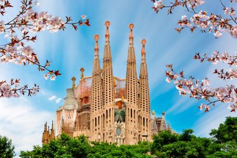
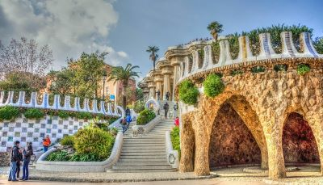
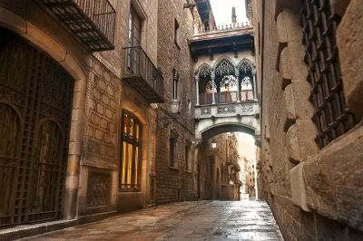

Explora la Majestuosidad de la Sagrada Familia
¡Bienvenido a la impresionante ciudad de Barcelona, hogar de la incomparable obra maestra arquitectónica de Antoni Gaudí, la Sagrada Familia! En Travel Partners Agency, te invitamos a descubrir la belleza y la grandeza de este emblemático símbolo de España y la fe cristiana.
Atractivos Turísticos
-

Basílica de la Sagrada Familia
Esta extraordinaria iglesia católica, diseñada por el renombrado arquitecto modernista Antoni Gaudí, es uno de los monumentos más visitados del mundo. Admira su intrincada fachada, sus impresionantes torres y su interior lleno de luz y color.
-

Parque Güell
Otra obra maestra de Gaudí, el Parque Güell es un parque público lleno de esculturas, mosaicos y edificios modernistas. Disfruta de vistas panorámicas de Barcelona desde lo alto del parque y maravíllate con la creatividad y el ingenio del arquitecto.
-

La Rambla y el Barrio Gótico
Sumérgete en el vibrante corazón de Barcelona explorando la famosa calle La Rambla, llena de restaurantes, tiendas y artistas callejeros. Además, pasea por las estrechas calles empedradas del Barrio Gótico, donde encontrarás fascinantes edificios históricos y encantadores rincones.
Itinerario de 5 días y 4 noches
-
Día 1: Llegada a Barcelona
-
1. Llegada al aeropuerto internacional de Barcelona y traslado al hotel.
-
2. Tarde libre para descansar o explorar los alrededores del hotel.
-
-
Día 2: Visita a la Sagrada Familia y Parque Güell
-
1. Mañana dedicada a explorar la Sagrada Familia, con una visita guiada al interior de la basílica y la posibilidad de subir a una de sus torres para disfrutar de vistas panorámicas.
-
2. Tarde en el Parque Güell, donde podrás admirar la arquitectura única de Gaudí y relajarte en medio de la naturaleza y el arte.
-
-
Día 3: Tour por el Barrio Gótico y La Rambla
-
1. Mañana de exploración por el Barrio Gótico, incluyendo la impresionante Catedral de Barcelona y la Plaza Sant Jaume.
-
2. Tarde libre para pasear por La Rambla y disfrutar de la animada atmósfera de esta famosa calle.
-
-
Día 4: Excursión opcional
-
1. Día libre para disfrutar de actividades opcionales, como una excursión a Montserrat para visitar el monasterio o un recorrido por las bodegas de la región vinícola de Penedès.
-
-
Día 5: Despedida de Barcelona
-
1. Mañana libre para compras de último momento o actividades adicionales.
-
2. Traslado al aeropuerto para el vuelo de regreso.
-
Costos del Viaje
El costo del viaje puede variar dependiendo de las preferencias individuales y las opciones de alojamiento seleccionadas. Nuestro paquete básico de 5 días y 4 noches incluye:
-
1. Traslados desde y hacia el aeropuerto.
-
2. Alojamiento en hoteles de calidad en el centro de Barcelona.
-
3. Excursiones mencionadas en el itinerario, incluida la entrada a la Sagrada Familia.
-
4. Guías locales expertos.
Para obtener un presupuesto personalizado y más detalles sobre opciones de alojamiento, actividades adicionales y servicios complementarios, no dudes en contactarnos. Estamos aquí para hacer de tu viaje a la Sagrada Familia una experiencia inolvidable. ¡Reserva tu aventura hoy con Travel Partners Agency!